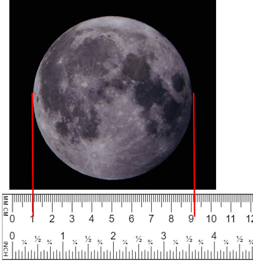
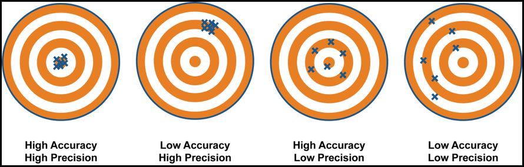

D1.3 Significant Figures#
D1.3.1 Motivation#
Actual measurements will always have uncertainties associated with them. For example, using a common ruler (see
below) and use the centimeter (cm) scale to measure the diameter of the moon, we would say it is a little bit more
than 8 cm. A confident person may estimate it to be 8.2 cm. If we include the millimeter (mm) scale as well, we can
say that the diameter is somewhere between 8.1 cm and 8.2 cm. We may say it is 8.15 cm.

In the example above, that would imply reporting the numbers as 8.2 cm and 8.15 cm, respectively, knowing that our uncertainties (or errors) are in the last digits.
The above measurements does not state the uncertainty explicitly but it is suggested by the significant figures used. For example, 8.15 cm has three significant figures (we will see the rules later) in the reported value. This measurement tells us that we are correct to the first two number (8.1 cm), while the third digit is uncertain.
1.3.2 A Note on Accuracy and Precission#
Is our measurement above accurate or precise? In layman term, these two words are often used interchangeable, but
in science they have very different meanings. To best illustrate the difference, let us consider the figure below.

If we circulated an object and a severely flawed ruler in the class, we would get X students measurements, and we would expect the measurements to be close but way off the actual value: the result would be precise but not accurate. On the other hand, if the ruler was a high-quality ruler, we would expect both an accurate and precise result.
If you want to gain a better understanding of uncertainty/errors, how these errors propagate in calculations, and
accuracy vs. precision, I recommend you take courses in experimental physics and statistics (the figure below
is to excite those of you who are into sexy statistical language and plots).
From Wikipedia: Accuracy and precision
A group of physicists were at a conference being held in Central Australia. As part of the conference entertainment, they were taken on a tour of the famous rock, Uluru. "This rock", announced the guide,"is 50,000,004 years old." The physicists - always impressed by precision in measurement - were astounded. "How do you know the age of the rock so precisely?" "Easy!", came the reply. "When I first came here, they told me it was 50 million years old. I've been working here for four years now."
It should hopefully be quite obvious that the above are jokes. Simply adding the estimated age of the rock and the surpassed 4 years is faulty in terms of the age of the rock. In the following, we will see how we deal with significant numbers in terms of basic arithmetic operations.
D1.3.3 General Rules#
Only measured numbers and numbers derived from measured numbers are subject to determination of significant figures. Mathematical number such as \(\pi\) and \(e\) have no influence in the determination of significant figures. The same goes for exact and counted numbers such as the number of hours in a day or number of people in a room etc.
All non-zero digits are significant.
Zeros placed between non-zero digits are significant.
Leading zeros are not significant.
Trailing zeros:
Significant in numbers containing decimal point.
If a number does not contain a decimal, then the significance of the trailing zero(s) must be determined in terms of the context of the number. If that cannot be determined, then they should not be considered significant.
Example 1
Number |
Significant Figures |
Explanation |
|---|---|---|
123.45 |
5 |
All non-zero digits are significant. |
1001.013 |
7 |
All zeros are between non-zero digits, so they are significant. |
0.0025 |
2 |
Leading zeros are not significant. |
12.500 |
5 |
Trailing zeros after the decimal point are significant. |
100 |
1 |
The trailing zeros are before the non-existent decimal point and we have no information on how they were measured or otherwise obtained. Hence, we must be conservative and assume they are not significant. |
D1.3.4 Significant Figures: Multiplication and Division#
Significant figures in a result obtained through multiplication and/or division is equal to the number of significant figures of the factor with the smallest number of significant figures.
Example 2
The smallest number of significant figures of the the two factors is 2 (from the 2.0 factor), so the answer must be reported to no more than 2 significant figures.
Example 3
Special Case Examples: Determine Significant Figures From Context
Say we take two exact numbers \(10\) and \(20\) and multiply them: \(10 \times 20 = 200\). Since they are both exact numbers, they have no influence on the number of significant numbers of the result. Hence, the result will be exact as well.
Now, let us say that someone provided us with two measured numbers, \(10\) and \(20\), and both were measured to 2 significant figures. Then the answer would be still be \(200\), but now the significant figures would be 2.
Finally, the values could have been reported as \(10\) with 2 significant figures and \(20\) measured to 1 significant figure. In this case, the answer is still \(200\), but now reported to only 1 significant figure.
Example 4
In this example, we will assume that the number \(100\) is exact.
Number |
Significant Figures |
Explanation |
|---|---|---|
100 x 2 = 200 |
1 |
2 has one significant figure. |
100 x 2.0 = 200 |
2 |
2.0 has two significant figures. |
100 x 2.00 = 200 |
3 |
2.00 has three significant figures. |
D.1.3.5 Significant Figure: Addition and Subtraction#
In this case, it is not the number of significant figures in the terms that matter, but instead it is the location of the significant figures. The calculated result should be reported to the location of the least significant decimal.
Example 5
Which one is correct?
or
We can add leading zeros to the last two numbers without changing the significance of these numbers: \(7.22 \rightarrow 07.22\) and \(8.300 \rightarrow 08.300\). However, we cannot add trailing zeros to \(12.1\) and \(7.22\) without changing the significance of the numbers! Hence, our answer must be \(27.6\) since 12.1 is only reported to the tenth decimal place.
D.1.3.6 Rounding#
Although this is known to the most of us (I hope), let us take an example to illustrate the concept.
Let us round the number 12.5678 to four significant figures. The number to the right of “6” is not significant and since it is greater than 5, we add one to the “6” to obtain \(12.57\) as our answer.
We are custom to the rule that if the number to the right is greater than 5 or if it is 5 followed by a non-zero digit then we add 1 to round up. If it is less than 5, then we leave it number as is.
Tie-Breaking Rules in Rounding#
In the above example, if we wanted the number rounded to 2 significant figures, then it would 13 according to the above standard rule.
However, if the number was 12.5 instead, and we still wanted it to 2 significant figures, then we need a tie-break rule. The most common rule is known as “round half up” and it is the rule we will stick to in this class. Under this rule, 12.5 is rounded to 13 whereas -12.5 is rounded to -12. The last result reveals a common mistake that most people unaware of rounding schemes do, as they would round -12.5 to -13 instead of -12.
Other tie-breaking rules exists such as: round-half down, round half toward/away zero, and round half to even/odd, and stochastic rounding. If you are into computer science, you may have heard of functions such as floor/ceil etc. for rounding numbers. The IEEE Standard for Floating-Point Arithmetic use the round to half even rounding scheme.
D1.3.7 Scientific Notation to the Rescue#
We saw in Example 4 how a number with different significant figures can have the same representation and all information about of its significance is lost withouth knowing the context. Scientif notation is the representation of a number that allows us to represent both number and significant figures at once.
Example 6
Number |
Significant Figures |
Scientific Notation |
|---|---|---|
100 x 2 = 200 |
1 |
2 x 10\(^2\) |
100 x 2.0 = 200 |
2 |
2.0 x 10\(^2\) |
100 x 2.00 = 200 |
3 |
2.00 x 10\(^2\) |
We can see that the leading factor (the coeffcient) shows the correct number of significant numbers and the ambiguity is gone.
Representing numbers in scientific notation removes the ambiguity that may occur in communicating numbers where the number of significant figures may be ambiguous. Scientific notation rocks! If we can just get the rest of the 99.99% of the worlds population to use this notation we would be better off!